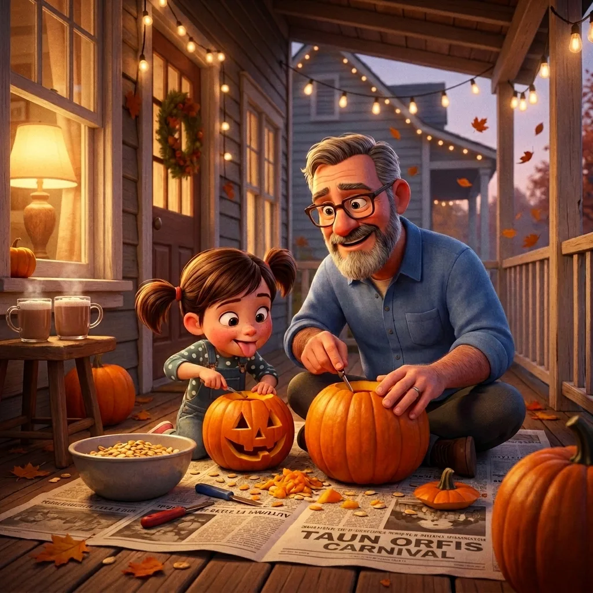
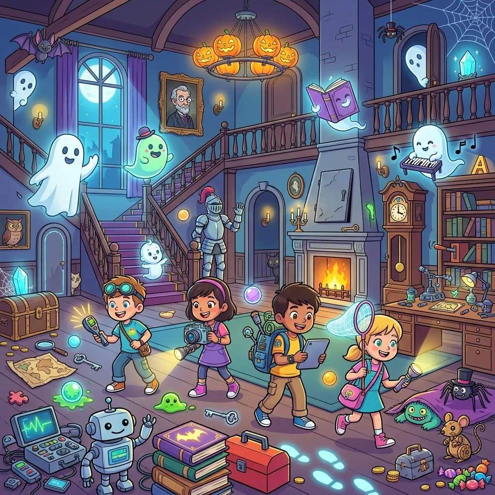

Free Halloween Spot-the-Difference Printables
Finding Halloween activities that are festive for a seven-year-old without being nightmare fuel for a four-year-old is an annual parenting puzzle. Our Halloween theme is deliberately cute, not creepy: smiling ghosts, wide-eyed owls, cheerful jack-o'-lanterns, a black cat with whiskers rather than fangs. Every puzzle is generated fresh, so you can print a stack for a party in a couple of minutes.


Choose the 🎃 Halloween theme, pick a difficulty, and print with its answer key.
Open the free generator
What's in the scenes
Jack-o'-lanterns (in classic orange and fun colors), friendly ghosts, bats, witch hats, spiders on threads, bubbling cauldrons, candy corn, black cats, owls, tombstones with flowers, bare spooky trees, and a golden moon — set against a purple twilight with stars and a picket fence.
Party-tested ways to use them
- Class party center. One puzzle per pupil, orange pencils, five-minute timer. Because every printout is unique, no one can copy their neighbor.
- Trick-or-treat queue management. A clipboard puzzle keeps younger siblings occupied between doorbells.
- Halloween-birthday overlap. October birthdays get themed party bags for the cost of a few printed sheets rolled and ribboned.
- Costume judging time-filler. While adults deliberate, kids hunt differences. Winner announced with the costume prizes.
- Boo-basket addition. Tuck two or three hard-mode puzzles into the neighborhood boo basket alongside the candy.
- ESL October lessons. The scenes carry a tidy Halloween vocabulary set (bat, ghost, pumpkin, spider…) — see our ESL activities guide for game formats.
Difficulty picks for October
- Easy (5 differences) — preschool party tables; changes are big and bold (a ghost disappears, a pumpkin turns purple).
- Medium (8) — the elementary-school sweet spot.
- Hard (12+) — tweens, teens, and adults who claim they'll "just check it quickly".
Every puzzle prints with the two pictures on one page and the answer key on its own page — hand out the puzzle, keep the answers. Puzzles are numbered, so a favorite can be reprinted exactly.
Selling Halloween activity books?
Halloween is the second-biggest seasonal window for KDP activity books after Christmas, and listings need to be live by early September. With Pro, a 25–50 puzzle Halloween book interior — with answer keys and KDP trim sizes — takes minutes to generate. The full workflow is in our KDP publishing guide.